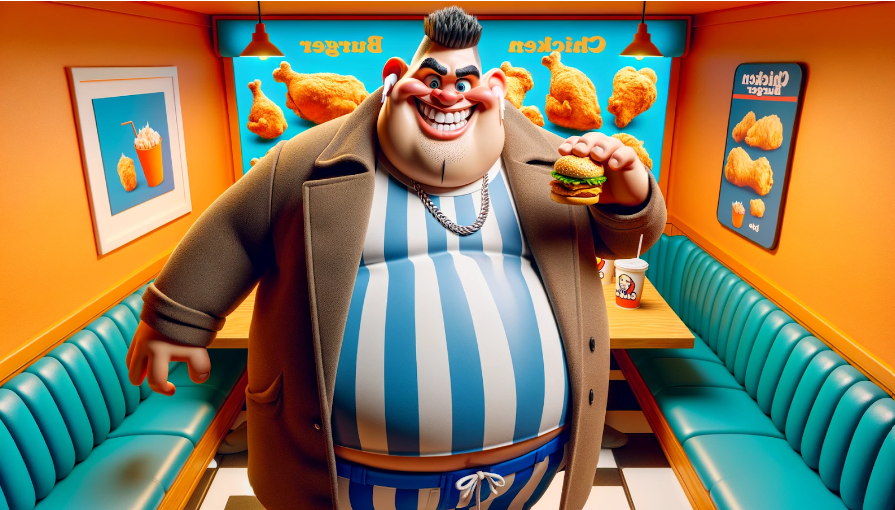
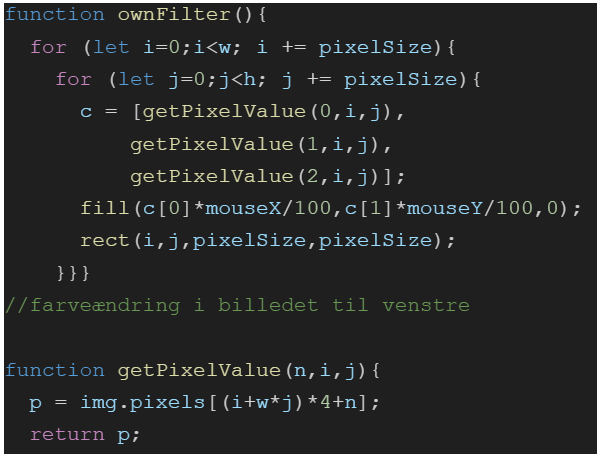

Problem:
Vi har lavet et projekt hvor vi skulle lave programmer der kunne redigere billeder, med fokus på pixelænding
Hvordan løser vi problemet
- Vores program skaber 2 billeder hvori det ene manipulere
- Vores program bruger lokationen af musen til at ændrer farveværdierne både ved bevægelse, både på langs og på tværs
Se programmet her
Her ses et uddrag fra midten af programmet med det originale billede (bemærk at dette billede er fra før ændringen af pixelstørrelsen)

Eksempel på kode

- Aktiveres vis functionen ownFilter aktiveres
- Hvis at i er mellem 0 og w (width), skal der ligges pixelstørrelsen til i
- Hvis j er mellem 0 og h (height) skal der ligges pixelstørrelsen til j
- c får pixlens røde værdi, for den nuværende i og j værdi i koordinater
- c får pixlens grønne værdi, for den nuværende i og j værdi i koordinater
- c får pixlens blå værdi, for den nuværende i og j værdi i koordinater
- Billedet fyldes den enkelte pixels individuelle røde værdi ganget med mussens x-værdi divideret i 100, og med den enkelte pixels individuelle grønne værdi ganget med mussens y-værdi divideret i 100
- Dette tegner et rektangel på position (i, j) med størrelsen pixelSize x pixelSize
- Sæt peanuttens xSpeed til at være 1 højere
- Slut løkken
- Dette starter definitionen af en funktion ved navn getPixelValue
- Dette beregner indekset til den ønskede farveværdi i billedets pixelarray. Det multiplicerer den lodrette position j med bredden af billedet w, lægger den vandrette position i til, ganger med 4 (fordi hver pixel kræver 4 pladser i arrayet - rød, grøn, blå og alfa) og tilføjer derefter den ønskede farvekanal n
- Den returnerer den ønskede farveværdi
Eventuelle forbedringer
Bedre grafik i form af højere resolution, evt en måde at ændre pixelstørrelsen på inde på programmet, flere muligheder for ændringer